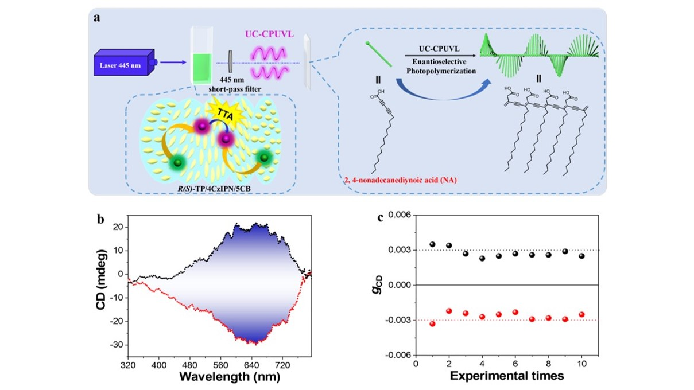

具有圆偏振发光（CPL）特性的光学材料由于在各个领域的巨大潜力而获得了广泛的关注。而具有较高发光不对称因子（glum）的CPL材料是实现有效应用的关键，然而目前大多数报道的光学材料所得到的发光不对称因子(glum)普遍较低，而且圆偏振发光区域都位于可见光区，相对较低的能量限制了其有效应用。因此，开发出具有高glum值的圆偏振紫外发光（CPUVL）材料，并进一步扩展其应用是非常必要的。
近日，国家纳米科学中心段鹏飞研究员团队首次构筑了一个基于三重态-三重态湮灭上转换和手性向列相液晶的发光体系，实现了对圆偏振发光的逐级放大过程，最终得到了发光不对称因子glum约为0.2的体系，并且可以实现由可见光到紫外光的上转换圆偏振紫外发光（UC-CPUVL）。进一步将其产生的上转换圆偏振紫外光应用于联乙炔的聚合反应中，得到光学活性高度可控且稳定的手性聚联乙炔，这项工作为使用低功率光源进行手性聚合提供了概念验证，并为将来CPL材料的实际应用奠定了基础。

图1: 逐级放大CPUVL的过程
研究人员以手性R（S）-4,12-联苯[2,2]对环芳烃（R-/S-TP）作为上转换受体和热激活延迟荧光（TADF）分子4CzIPN作为非手性敏化剂。成功实现了可见到紫外的上转换圆偏振光的发射，应当指出的是，由TADF分子在较小的S1-T1间隙（ΔEST）中具有出色的性能，并且在系间窜越过程中的能量损失较少，因此该组合显示出较高的光子上转换效率（ΦUC= 7.9％ ）。面手性分子R- / S-TP在稀溶液中显示出良好的CPL性能（|glum | = 3.1×10-3，图1），加入敏化剂以后，成功实现了可见到紫外的上转换圆偏振光的发射，同时上转换发光过程可以进一步增强CPUVL的发光不对称因子（|glum | = 9.2 × 10-3）。有趣的是，我们将该上转换体系掺杂到室温向列型液晶中之后，可以获得手性向列相液晶（N * LC）和glum值达到0.19的UC-CPUVL。从N * LC产生的具有很高glum 值的UC-CPUVL已成功应用于联乙炔的聚合反应中，得到光学活性高度可控且稳定的手性聚联乙炔（图2）。该研究工作不仅将为基于TTA-UC产生的UC-CPUVL进行手性聚合提供概念验证，而且还将为进一步开发CPL材料的功能性应用铺平道路。
图2: UC-CPUVL引发联乙炔对映选择性光聚合
相关结果发表在Nature Communications，DOI:10.1038/s41467-020-19479-1